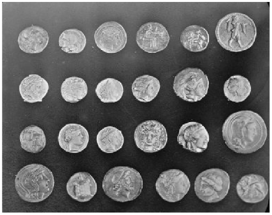
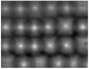
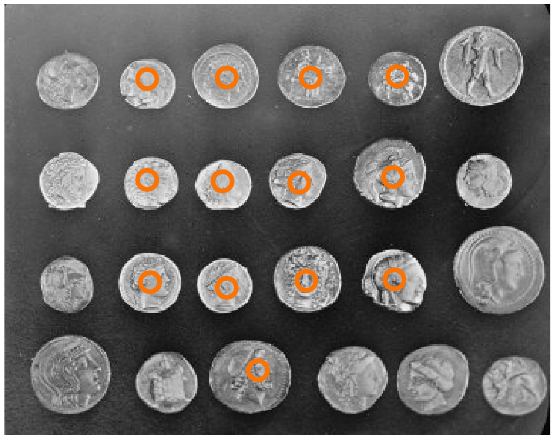
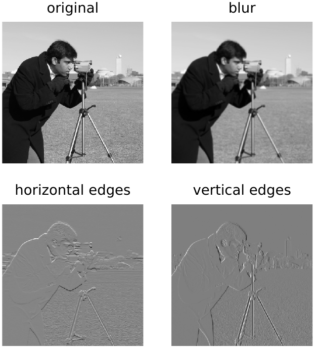
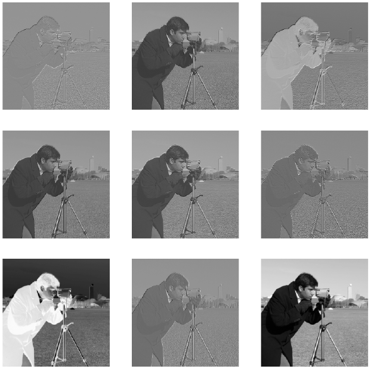
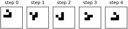
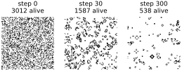
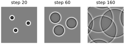
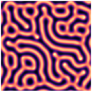

The networks of the last chapter begin by flattening the image, and in doing so they throw away the most obvious fact about pictures: that nearby pixels belong together. A stroke, an edge, the rim of a coin are local patterns, and the same pattern can appear anywhere in the frame. In this chapter we meet the operation built to exploit that fact. Convolution slides one small pattern across an image and asks, at every position, “how much does this patch look like my pattern?” It is one of the oldest tools of image processing, and it is the operation that gives convolutional neural networks their name.
Finding coins
Let’s start with a concrete task. Here is a photograph of coins, another sample image from scikit-image, drawn with the plot helper of Chapter 7:
from skimage import data
coins = data.coins() / 255.0
print(coins.shape)
plot(coins, size=3.2)(303, 384)

We cut one coin out to use as a pattern to search for. A small pattern used this way is called a template, a filter or a kernel; the three words mean the same thing here.
coin = coins[170:220, 75:130]
print(coin.shape)
plot(coin, size=1.2)(50, 55)
How do we measure whether some patch of the image looks like the coin? We already know how: the dot product. Multiply the patch by the kernel pixel by pixel and add everything up. First we subtract the average brightness from both, so that dark pixels become negative and count against a match. Otherwise any bright patch would score well.
image = coins - coins.mean() # center both on zero, so dark
kernel = coin - coin.mean() # pixels count against a match
def match_at(r, c):
h, w = kernel.shape
patch = image[r:r + h, c:c + w]
return np.sum(patch * kernel)
print(round(match_at(170, 75), 1)) # where the coin came from
print(round(match_at(100, 200), 1)) # somewhere else188.2 6.8
The score where the coin actually is dwarfs the score at an arbitrary spot. Now do this at every position: lay the kernel over the top-left corner of the image, compute the score, slide one pixel to the right, compute again, and so on across every row. SciPy does exactly this with correlate2d:
from scipy.signal import correlate2d
z = correlate2d(image, kernel, mode='valid')
print(z.shape)
row, col = np.unravel_index(z.argmax(), z.shape)
print(int(row), int(col))
plot(z, size=3.2)(254, 330) 170 75

The output is itself an image, a map of where the pattern appears, and its brightest point is exactly where we cut the coin out. But look at Figure 13.3: every coin produces a bright spot. The kernel has found the other coins too, although it has never seen them.
The raw score is still biased by brightness, since a brighter coin produces bigger products. Normalizing each patch before comparing removes that bias. scikit-image packages this as match_template, and peak_local_max finds the separate bright spots:
from skimage.feature import match_template, peak_local_max
score = match_template(coins, coin)
peaks = peak_local_max(score, min_distance=20, threshold_abs=0.5)
print(len(peaks), 'matches')
plt.figure(figsize=(3.2, 2.6))
plt.imshow(coins, cmap='gray')
h, w = coin.shape # mark each coin's center
plt.scatter(peaks[:, 1] + w // 2, peaks[:, 0] + h // 2, s=40,
facecolors='none', edgecolors='#f97306', linewidths=1.5)
plt.axis('off')
plt.show()13 matches

Thirteen matches. The coins that were missed are a different size or show a different design, so they really do look less like this one coin. A single kernel detects a single pattern. To find all the coins we would need several kernels, and that is exactly what a convolutional network will have.
Correlation and convolution
Strictly speaking, what we just did is called cross-correlation. Convolution is the same sliding sum with the kernel flipped upside down and left to right first; the flip comes from its origins in signal processing, where it makes the mathematics tidier. For a symmetric kernel the two are identical, and for a kernel that is going to be learned it makes no difference at all, since a network would simply learn the flipped kernel. Deep learning libraries, PyTorch included, actually compute cross-correlation and call it convolution. We will do the same, and use correlate2d throughout. (SciPy also has convolve2d, which does flip the kernel. For the edge detectors below that would turn every response upside down, bright where it should be dark.)
Kernels as tools
Small kernels do many of the classic operations of image processing. A kernel of equal weights averages each pixel with its neighbors, which blurs the image. The Sobel kernel has positive weights on one side and negative on the other, so it responds where brightness changes, at an edge, and transposing it turns a horizontal-edge detector into a vertical one.
camera = data.camera() / 255.0
blur = np.ones((5, 5)) / 25
sobel = np.array([[ 1, 2, 1],
[ 0, 0, 0],
[-1, -2, -1]])
def filt(image, k): # mirror the border instead of zeros
return correlate2d(image, k, mode='same', boundary='symm')
results = [(camera, 'original'),
(filt(camera, blur), 'blur'),
(filt(camera, sobel), 'horizontal edges'),
(filt(camera, sobel.T), 'vertical edges')]
plt.figure(figsize=(3.6, 3.9))
for i, (im, name) in enumerate(results):
plt.subplot(2, 2, i + 1)
plt.imshow(im, cmap='gray')
plt.title(name)
plt.axis('off')
plt.show()
The small filt helper asks for mode='same', which pads the border so that the output is the same size as the input, and boundary='symm', which fills that padding with a mirror image of the edge pixels. Padding with zeros would put an artificial edge all the way around the frame, and the edge detectors would dutifully find it.
What do random kernels do? Each one picks out some mixture of brightness and edges in different directions (Figure 13.6).
rng = np.random.default_rng(0)
plt.figure(figsize=(3.6, 3.6))
for i in range(9):
k = rng.uniform(-1, 1, size=(3, 3))
plt.subplot(3, 3, i + 1)
plt.imshow(filt(camera, k), cmap='gray')
plt.axis('off')
plt.show()
Some of them are useful, most are not, and none was designed. Hold on to that thought: a convolutional network starts with random kernels like these and gradually adjusts them, by gradient descent, until they detect whatever the task needs.
Convolution by hand
There is no magic in correlate2d. Two loops over the output positions and the dot product at each one are all it takes:
def conv(image, kernel):
kh, kw = kernel.shape
out = np.zeros((image.shape[0] - kh + 1, image.shape[1] - kw + 1))
for i in range(out.shape[0]):
for j in range(out.shape[1]):
out[i, j] = np.sum(image[i:i + kh, j:j + kw] * kernel)
return out
z_loop = conv(camera, sobel)
z_scipy = correlate2d(camera, sobel, mode='valid')
print(np.allclose(z_loop, z_scipy))True
Our loop gives the same answer as SciPy. The valid output, which never lets the kernel hang off the edge of the image, is two pixels smaller in each direction for a kernel.
Convolution in PyTorch
PyTorch’s F.conv2d computes many convolutions at once. It expects images as a four-dimensional tensor of shape (batch, channels, height, width), and kernels as (output channels, input channels, height, width). For a single grayscale image and a single kernel, most of those sizes are 1, which we add with [None, None]:
import torch
import torch.nn.functional as F
x = torch.tensor(camera, dtype=torch.float32)[None, None] # (1, 1, H, W)
k = torch.tensor(sobel, dtype=torch.float32)[None, None] # (1, 1, 3, 3)
z_torch = F.conv2d(x, k)
print(x.shape, k.shape, z_torch.shape)
print(np.allclose(z_torch[0, 0].numpy(), z_scipy, atol=1e-5))torch.Size([1, 1, 512, 512]) torch.Size([1, 1, 3, 3]) torch.Size([1, 1, 510, 510]) True
Same answer again. Those extra dimensions are where the power is. With 64 kernels stacked along the first axis, a single call to F.conv2d produces 64 feature maps, and on a graphics card it computes them all in parallel. (Sixty-four is the number of kernels in the first layer of the AlexNet we will open up in Chapter 15, though its kernels are and in color.) Here is a rough comparison of speed:
import time
def sync():
if device == 'cuda':
torch.cuda.synchronize()
elif device == 'mps':
torch.mps.synchronize()
kernels = rng.uniform(-1, 1, size=(64, 3, 3))
t = time.time()
conv(camera, kernels[0])
print(f'python loop, 1 kernel: {time.time() - t:.3f} s')
t = time.time()
for k in kernels:
correlate2d(camera, k, mode='valid')
print(f'scipy, 64 kernels: {time.time() - t:.3f} s')
xg = x.to(device)
kg = torch.tensor(kernels, dtype=torch.float32, device=device)[:, None]
F.conv2d(xg, kg) # warm up
sync()
t = time.time()
for _ in range(10):
F.conv2d(xg, kg)
sync() # wait for the GPU
print(f'pytorch {device}, 64 kernels: {(time.time() - t) / 10:.4f} s')python loop, 1 kernel: 0.502 s scipy, 64 kernels: 0.248 s pytorch mps, 64 kernels: 0.0020 s
Notice the calls to sync(). A graphics card works asynchronously: F.conv2d returns as soon as the work is queued, not when it is finished. Without waiting for the card, the timer would measure only how long it takes to hand over the job, and the GPU would look impossibly fast. Even measured honestly, it computed 64 feature maps more than a hundred times faster than SciPy did, and much faster than our Python loop computed a single one. Your timings will differ with your hardware, but not by enough to change that picture.
From filters to networks
A convolution kernel is a neuron in disguise. Like the neurons of Chapter 12, it computes a weighted sum of its inputs. There are two differences. It looks only at a small neighborhood of pixels, rather than the whole image; and the same weights are used at every position, rather than separate weights for each location. Those two constraints are exactly what images call for. Local patterns are built from nearby pixels, and a coin, an edge or the loop of a 9 means the same thing wherever it appears.
Put a layer of learnable kernels where the matrix multiplication used to be, follow it with a ReLU, stack a few of these layers, and you have a convolutional neural network. That is the next chapter. First, a short detour that shows how much a single small kernel can do when it is applied over and over.
Coda: convolution as a rule of nature
This coda is for fun; the next chapter does not depend on it. So far a convolution has been something we apply to an image once. Apply it again and again, feeding each output back in as the next input, and it becomes something else: a law of motion. Many systems in nature are governed by local rules. What happens next at each point depends only on what is happening at that point and its neighbors, and “look at the neighbors and add them up” is exactly what a kernel computes.
The best-known example is John Conway’s Game of Life, from 1970. Each cell of a grid is alive (1) or dead (0). At each step, count each cell’s eight living neighbors. A dead cell with exactly three comes to life; a living cell with two or three survives; every other cell is dead at the next step. Counting neighbors is a correlation with a kernel of ones that has a zero in the middle, and the rule is two comparisons. boundary='wrap' joins the grid’s left edge to its right and its top to its bottom, so that nothing falls off.
neighbors = np.array([[1, 1, 1],
[1, 0, 1],
[1, 1, 1]])
def life_step(world):
n = correlate2d(world, neighbors, mode='same', boundary='wrap')
return ((n == 3) | ((world == 1) & (n == 2))).astype(int)
world = np.zeros((8, 8), dtype=int)
world[1, 2] = world[2, 3] = world[3, 1] = world[3, 2] = world[3, 3] = 1
plt.figure(figsize=(4.6, 1.0))
for i in range(5):
plt.subplot(1, 5, i + 1)
plt.imshow(world, cmap='gray_r', vmin=0, vmax=1)
plt.title(f'step {i}')
plt.xticks([])
plt.yticks([])
plt.gca().spines[:].set_visible(True)
world = life_step(world)
plt.show()
Five living cells, given this rule, make a shape that walks across the grid forever (Figure 13.7). Nobody programmed walking; it emerges from the rule. Start from a random soup instead, and the soup boils down to a scattering of stable blocks, blinking bars and the occasional glider (Figure 13.8).
world = (rng.random((100, 100)) < 0.3).astype(int)
plt.figure(figsize=(4.6, 1.6))
for i in range(301):
if i in (0, 30, 300):
plt.subplot(1, 3, [0, 30, 300].index(i) + 1)
plt.imshow(world, cmap='gray_r')
plt.title(f'step {i}\n{world.sum()} alive')
plt.axis('off')
world = life_step(world)
plt.show()
Physics works the same way, with real numbers instead of alive and dead. The kernel below, the Laplacian, compares each point with the average of its neighbors. Its weights add up to zero, so on a flat surface it gives zero everywhere: only differences between a point and its neighbors count. Applied to a single bump it is negative at the bump and positive around it:
laplace = torch.tensor([[0.5, 1.0, 0.5],
[1.0, -6.0, 1.0],
[0.5, 1.0, 0.5]]) / 2 # neighbors minus center
def lap(u): # u: (1, 1, H, W)
u = F.pad(u, (1, 1, 1, 1), mode='circular') # wrap around the edges
return F.conv2d(u, laplace[None, None])
bump = torch.zeros(1, 1, 5, 5)
bump[0, 0, 2, 2] = 1.0
print(lap(bump)[0, 0])tensor([[ 0.0000, 0.0000, 0.0000, 0.0000, 0.0000],
[ 0.0000, 0.2500, 0.5000, 0.2500, 0.0000],
[ 0.0000, 0.5000, -3.0000, 0.5000, 0.0000],
[ 0.0000, 0.2500, 0.5000, 0.2500, 0.0000],
[ 0.0000, 0.0000, 0.0000, 0.0000, 0.0000]])Think of a drumhead, a stretched elastic sheet. Each point of it is pulled toward the level of the points around it: a high point is pulled down, a low point up, and the Laplacian measures that pull. Keep two arrays, the height of the sheet and how fast each point is moving. Each step, the pull changes the speed and the speed changes the height:
N = 200
rows, cols = torch.meshgrid(torch.arange(N), torch.arange(N),
indexing='ij')
u = torch.zeros(1, 1, N, N) # height of the sheet
v = torch.zeros(1, 1, N, N) # how fast it is moving
for r, c in [(60, 60), (130, 80), (90, 150)]: # three taps
u[0, 0] += torch.exp(-((rows - r)**2 + (cols - c)**2) / 8.0)
frames = []
for t in range(161):
v += 0.25 * lap(u) # pulled toward the neighbors
u += v
if t in (20, 60, 160):
frames.append(u[0, 0].clone())
plt.figure(figsize=(4.6, 1.6))
for i, (f, t) in enumerate(zip(frames, (20, 60, 160))):
plt.subplot(1, 3, i + 1)
plt.imshow(f, cmap='gray', vmin=-0.1, vmax=0.1)
plt.title(f'step {t}')
plt.axis('off')
plt.show()
That loop is the wave equation, the simplest physics of vibrating sheets, sound and light, and the only spatial operation in it is a convolution (Figure 13.9). (Real ripples on water are more complicated: their speed depends on their wavelength.) The faint wake inside each ring is not a bug: in a flat, two-dimensional world a sharp tap always leaves one. We used F.conv2d this time, with F.pad in 'circular' mode to wrap the edges, so the same code would run on a graphics card once its tensors are moved there with .to(device).
Chemistry, too. In the Gray–Scott model two chemicals spread through a dish at different speeds while one feeds on the other. Each step is two Laplacians and a little arithmetic. The numbers 0.16 and 0.08 are how fast each chemical spreads; feed is how fast fresh flows in and kill how fast is removed, and U * V * V is the reaction, in which two units of turn one unit of into more :
N = 128
U = torch.ones(1, 1, N, N) # chemical U fills the dish
V = torch.zeros(1, 1, N, N)
U[..., 54:74, 54:74] = 0.5 # a square of chemical V
V[..., 54:74, 54:74] = 0.25
torch.manual_seed(0)
V += 0.02 * torch.rand(1, 1, N, N)
feed, kill = 0.037, 0.06
for t in range(10_000):
uvv = U * V * V # the reaction: U + 2V -> 3V
U += 0.16 * lap(U) - uvv + feed * (1 - U)
V += 0.08 * lap(V) + uvv - (feed + kill) * V
plt.figure(figsize=(2.4, 2.4))
plt.imshow(V[0, 0], cmap='magma')
plt.axis('off')
plt.show()
From a planted square, a labyrinth of stripes grows to fill the dish (Figure 13.10), like the patterns on a fish or a seashell. Alan Turing proposed in 1952 that some animal markings form by reaction–diffusion, though in his version the pattern arises from an even mixture all by itself rather than from a planted seed. Change feed and kill slightly and you get spots, or worms, or patterns that divide like cells.
These simulations are not neural networks, but they show what repeated local rules can do: a kernel, applied over and over, is enough to produce motion, waves and growth. Researchers have even trained small networks to learn such rules from examples, and Appendix A does it for the Game of Life. A deep convolutional network has the same structure, a stack of local operations applied one after another, except that its kernels are not given by physics. They are learned, and in the next chapter we learn them.